Pour une usine dont l'ERP (Sage, Odoo, SAP…) tient déjà les matières, les articles et les ordres de fabrication : DivaWaste les reprend au lieu de vous les faire saisir.
⏱ 30 minutes🧶 Exemple : bonneterie🤖 L'assistant virtuel vous guide
Avant de commencer, ayez sous la main
Tout ce que demande le Guide 1
Des exports Excel ou CSV de l'ERP : matières, articles, OF
Si possible, l'adresse https où l'ERP publie ses exports
La personne qui relie l'ERP (service informatique, éditeur)
Le registre des déchets, avec le n° d'OF de chaque lot
Le chemin en un coup d'œil
Le compte et la mise en route sont ceux des Guides 1 et 2 : ils sont résumés ici. Ce guide détaille comment les données de l'ERP arrivent dans DivaWaste, du plus simple au plus automatique. Exemple : Bonneterie Cap Bon (Nabeul), polos et t-shirts.
ACréer le compteComme le Guide 1.
1Votre façon de travailler« ERP » → Oui, « Production » → Oui.
2–4Site, déchets, prestataireComme les Guides 1 et 2.
E1Importer les exportsMatières, articles, puis OF : un fichier à la fois.
E2Les colonnes, une seule foisDivaWaste les retient pour les fois suivantes.
E3Les déchets avec leur OFLe registre des déchets, chaque lot à son OF.
E4Chaque nuit, tout seulDivaWaste lit l'export de l'ERP vers 4 h.
E5En direct, par l'APIUne clé d'accès pour l'ERP.
E6Ce qui change ensuiteLes données de l'ERP se modifient dans l'ERP.
✓Fiche de testCochez ce qui marche, notez ce qui gêne.
Trois chemins, un seul à choisir.Le fichier (E1–E3) : vous exportez, vous importez, quand vous voulez. Chaque nuit (E4) : l'ERP publie l'export à une adresse, DivaWaste le lit seul. L'API (E5) : l'ERP envoie ses données au fil de l'eau. Commencez par le fichier : il fixe les colonnes que les deux autres réutilisent.
DivaWaste · Guide 3 — Avec ERP, avec production
A–4. Le compte et la mise en route Détail pas à pas : Guide 1 ; production : Guide 2
Créer un compte › Industriel › société, Secteur d'activité, vous, formule. Confirmez l'email ; Diva Software valide la société.
Accueil › Mise en route, étape 1 : répondez Oui à « Avez-vous un ERP ? » et à « Suivez-vous la production ? ». Enregistrer mes réponses.
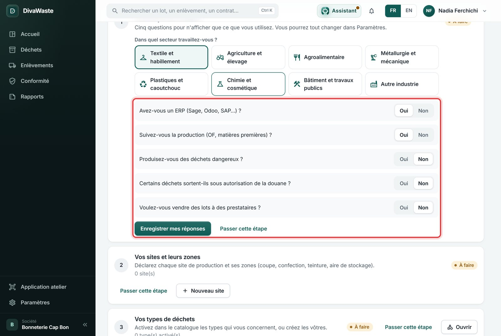
Le site (ici Usine de Nabeul, avec les zones Tricotage et Confection), les types de déchets (Déchets de fil, Rebuts de confection, Cartons), le prestataire : comme le Guide 1.
✔ Vous devez voir le menu Production (Fabrication, Référentiel, Analyse), et en bas de la Mise en route, trois façons de faire arriver les données :
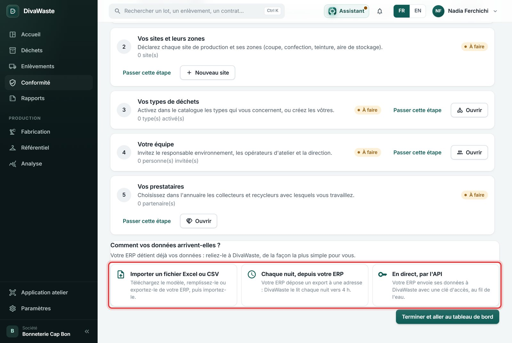
DivaWaste · Guide 3 — Avec ERP, avec production
E. Les données de l'ERP
E1Importer les exports, dans l'ordre
Accueil › Mise en route › « Importer un fichier Excel ou CSV ». La page dit d'abord ce que contient le fichier :
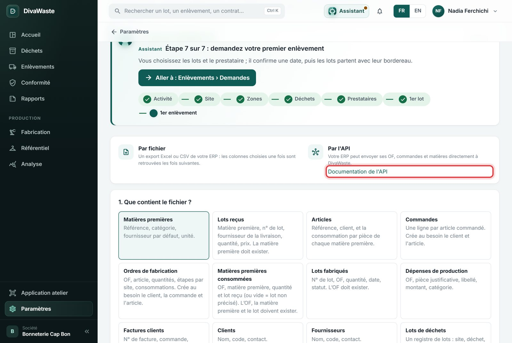
Ordre
Fichier de l'ERP
À choisir
1
Les matières premières (référence, unité, grammage, laize)
Matières premières
2
Les articles (référence, matière, consommation par pièce)
Pourquoi cet ordre ? Un article cite sa matière ; un OF cite son article. Ce qui est cité doit exister avant. Pas d'export ? Télécharger un modèle vide donne un fichier avec les bonnes colonnes.
DivaWaste · Guide 3 — Avec ERP, avec production
1 — Les matières premières. Choisissez la case Matières premières, puis le fichier (ici erp-1-matieres.xlsx, exporté de l'ERP).
Référence interne
Désignation
Unité
Catégorie
Grammage
Laize
JER-180
Jersey coton 180 g
m
Tissu
180
160
FIL-COT30
Fil coton 30/1
kg
Fil
2. Où se trouve chaque information ? DivaWaste propose une colonne pour chaque information. Ici, il n'a pas reconnu « Référence interne » : Référence * affichait « Absente du fichier ». Ouvrez la liste et choisissez la colonne Référence interne. Une information marquée * est obligatoire.
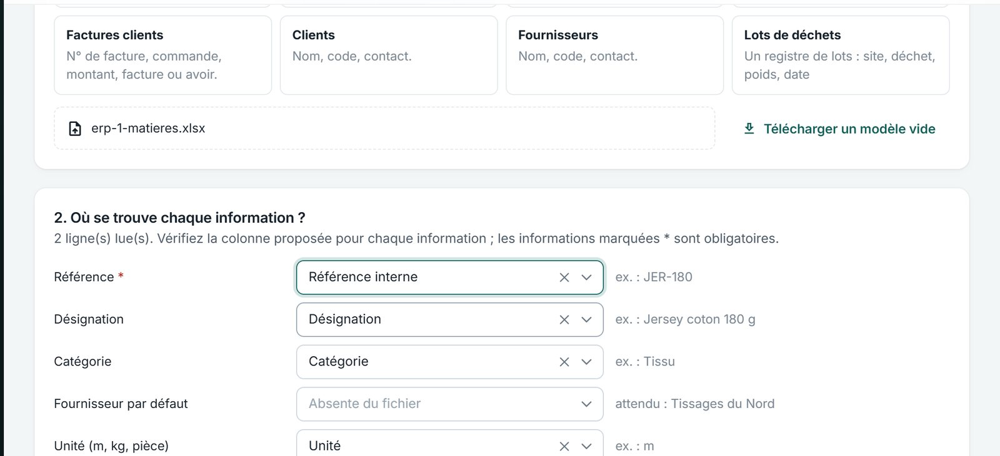
Vérifier sans importer, puis Importer : « Sur 2 ligne(s) : 2 créée(s) ». Recommencez avec le fichier des Articles (même chose pour sa colonne Référence).
DivaWaste · Guide 3 — Avec ERP, avec production
3 — Les ordres de fabrication. Une ligne par étape de l'OF, avec les pièces réalisées et la matière consommée à cette étape :
N° OF
Produit
Qté prévue
Qté produite
Début
Opération
Usine
Pièces réalisées
Composant
Qté consommée
OF-24117
POLO-200
800
760
20/10/2026
Tricotage
Usine de Nabeul
760
JER-180
735
OF-24118
TS-100
1200
1150
22/10/2026
Confection
Usine de Nabeul
1150
JER-180
700
Ici, deux colonnes sont à choisir à la main : Article * ← « Produit », et Matière consommée ← « Composant ». Le reste est reconnu (N° OF, Qté prévue, Opération = Étape, Usine = Site…).
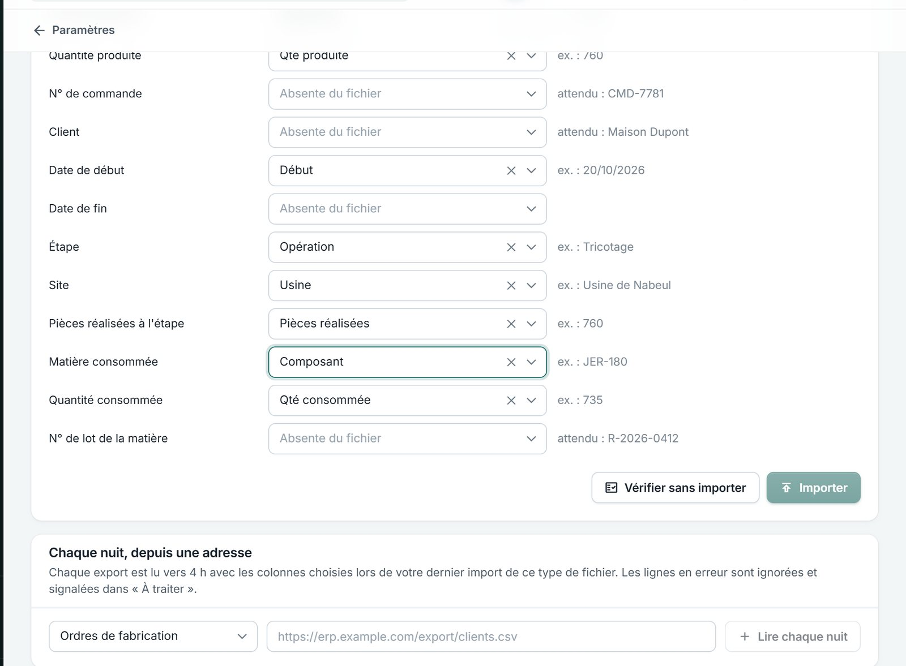
DivaWaste · Guide 3 — Avec ERP, avec production
Une ligne en erreur ? Elle est écartée et expliquée, avec son numéro de ligne ; les autres sont importées. Exemple réel pendant le test : l'étape « Tricotage » n'existait pas encore (elle a été ajoutée depuis) :
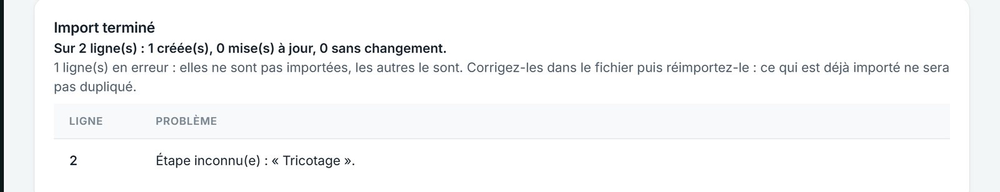
Corrigez le fichier (ou faites corriger DivaWaste) et réimportez le même fichier : ce qui est déjà importé n'est pas doublé.
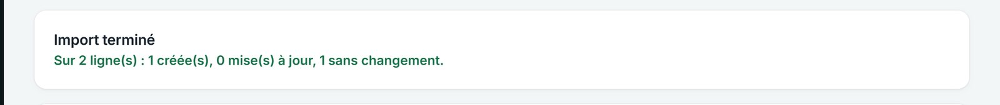
✔ Vous devez voir « 1 créée(s), 0 mise(s) à jour, 1 sans changement » : OF-24117 est créé, OF-24118 (déjà là) n'est pas recréé. Si une quantité a changé dans l'ERP, la ligne est « mise à jour ».
E2Les colonnes, une seule fois
Au fichier suivant du même genre, DivaWaste retrouve les colonnes choisies la dernière fois, par leur titre. Il l'écrit en vert :
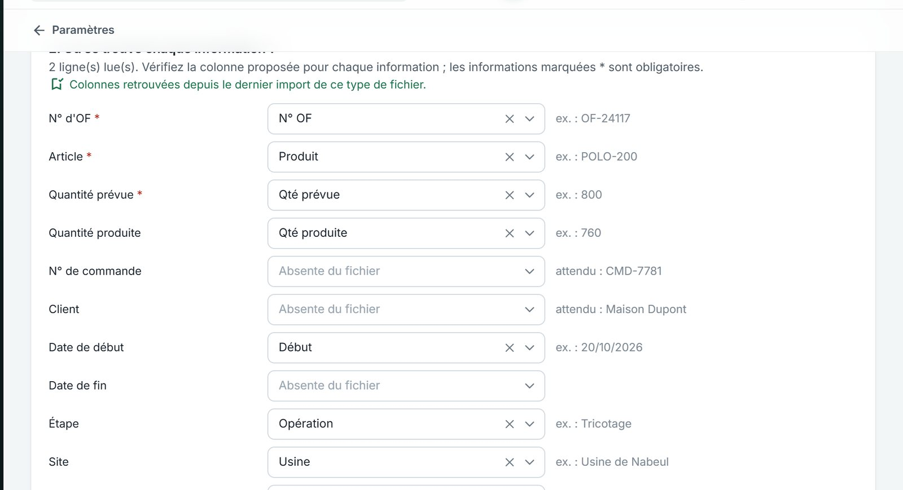
DivaWaste · Guide 3 — Avec ERP, avec production
E3Les déchets, chacun avec son OF
Le registre des déchets s'importe par Déchets › Lots › Importer (Guide 1, partie D). Avec une colonne N° d'OF, chaque lot est rattaché à son ordre de fabrication :
Date
Site
Zone
Type de déchet
Poids (kg)
N° d'OF
Référence
23/10/2026
Usine de Nabeul
Tricotage
Déchets de fil
22
OF-24117
DCH-501
27/10/2026
Usine de Nabeul
Confection
Rebuts de confection
15
OF-24118
DCH-502
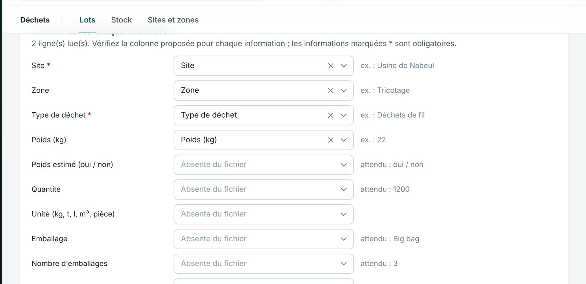
✔ Vous devez voir « 2 créée(s) », puis dans Déchets › Lots : L-2026-000001 (Déchets de fil, NAB · Tricotage, 22 kg, 23/10/2026) et L-2026-000002 (Rebuts de confection, NAB · Confection, 15 kg).
Sans n° d'OF ? Le lot compte quand même : si sa zone est une étape (Tricotage), son poids est réparti entre les OF présents à cette étape ce jour-là (« Estimé » dans Analyse, Guide 2 P6).
DivaWaste · Guide 3 — Avec ERP, avec production
E4Chaque nuit, tout seul
Si l'ERP peut publier un export à une adresse https (une tâche planifiée, un lien de partage), DivaWaste le lit chaque nuit vers 4 h : plus de fichier à envoyer.
D'abord, importez ce même export une fois à la main (E1) : les colonnes choisies seront réutilisées chaque nuit.
En bas de la page d'import, Chaque nuit, depuis une adresse : choisissez ce que contient l'export (ici « Ordres de fabrication »), collez l'adresse, cliquez sur Lire chaque nuit.
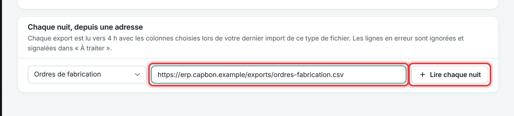
✔ Vous devez voir une ligne par export lu chaque nuit, avec un interrupteur (lecture en marche ou arrêtée), Lire maintenant, et la dernière lecture : « Dernière lecture : N créé(s), N mis à jour, N ligne(s) en erreur ».
Lignes en erreur la nuit ? Elles sont ignorées et signalées dans À traiter (Accueil). « Colonnes devinées d'après les titres » : importez le fichier une fois à la main pour les fixer.
Pendant ce test, l'adresse de l'exemple n'existe pas : elle a été saisie sans être enregistrée. Testez avec l'adresse réelle de votre ERP.
DivaWaste · Guide 3 — Avec ERP, avec production
E5En direct, par l'API
L'ERP peut aussi envoyer ses OF, commandes et matières à DivaWaste au fil de l'eau. C'est le travail de la personne qui relie l'ERP ; vous lui donnez une clé d'accès.
Paramètres › Clés d'accès API (ou Mise en route › « En direct, par l'API »).
Nom de la clé : à quoi elle sert (« ERP Odoo — Bonneterie Cap Bon »). Créer une clé.
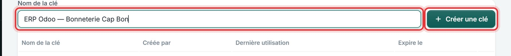
La clé s'affiche une seule fois : cliquez sur Copier et transmettez-la de façon sûre, avec l'adresse de l'API et le lien Documentation de l'API (page d'import).
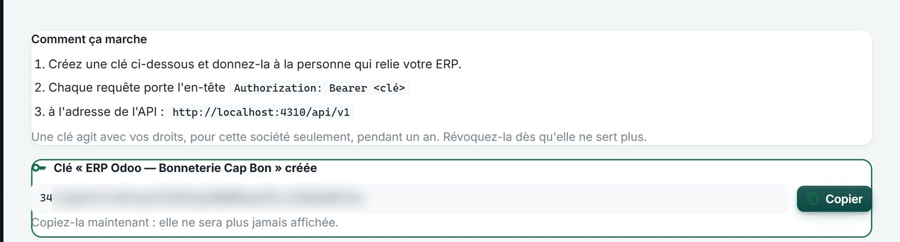
La clé est floutée ici : ne la montrez jamais, ne l'envoyez pas par un canal public.
✔ Vous devez voir la clé dans la liste : nom, créée par, Dernière utilisation (« Jamais » tant que l'ERP ne l'a pas utilisée), Expire le (un an), bouton Révoquer.
Une clé agit avec vos droits, pour cette société seulement, pendant un an. Révoquez-la dès qu'elle ne sert plus (changement d'ERP, départ du prestataire informatique).
DivaWaste · Guide 3 — Avec ERP, avec production
E6Ce qui change ensuite
Avec un ERP, les pages de production rappellent d'où viennent les données :
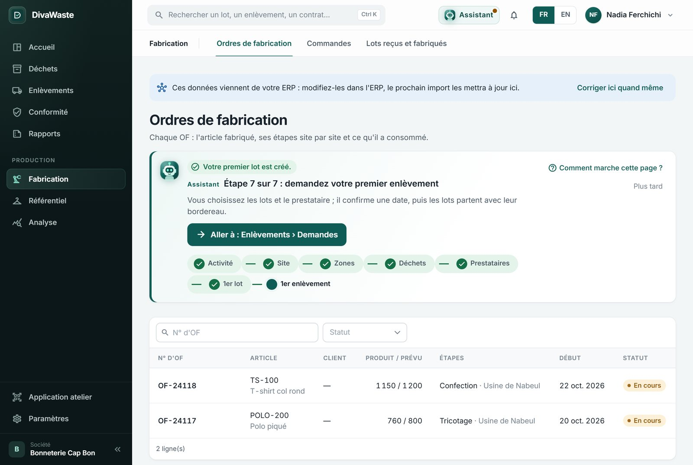
« Ces données viennent de votre ERP : modifiez-les dans l'ERP, le prochain import les mettra à jour ici. » Une correction faite seulement dans DivaWaste serait écrasée au prochain import. En cas d'urgence : Corriger ici quand même.
Le reste est comme dans le Guide 2 : la page de l'OF, ses déchets, son taux de chute ; Analyse pour tous les OF.
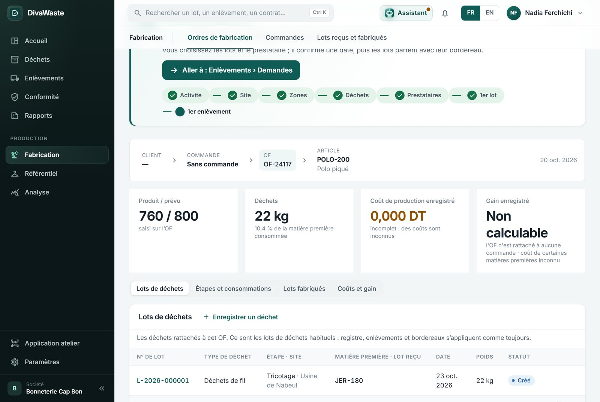
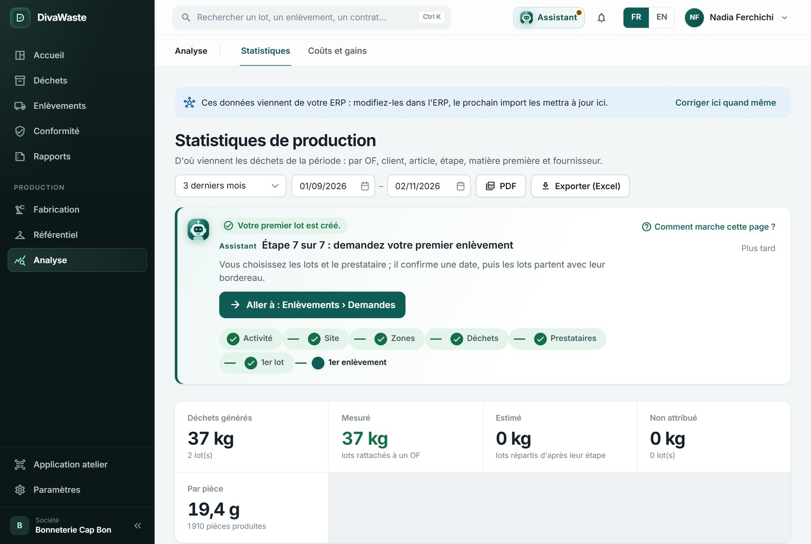
✔ Vous devez voir OF-24117 : 760 / 800, 22 kg de déchets, 10,4 % de la matière consommée. Analyse : 37 kg mesurés, 19,4 g par pièce pour 1 910 pièces.
DivaWaste · Guide 3 — Avec ERP, avec production
Fiche de test
Cochez chaque résultat obtenu, notez ce qui a gêné.
Étape
Résultat attendu
☐
1 Activité
ERP Oui + Production Oui : menu Production ; trois façons d'arriver (fichier, chaque nuit, API).
☐
E1 Matières
Une colonne non reconnue se choisit à la main ; « 2 créée(s) ».
☐
E1 OF
Une ligne en erreur est expliquée avec son n° de ligne ; les autres sont importées.
☐
Réimport
Le même fichier réimporté : « sans changement », rien n'est doublé.
☐
E2 Colonnes
« Colonnes retrouvées depuis le dernier import » au fichier suivant.
☐
E3 Déchets
Les lots importés avec un n° d'OF apparaissent sur la page de cet OF.
☐
E4 Chaque nuit
L'export ajouté apparaît avec son interrupteur et « Lire maintenant » ; la lecture donne un résultat.
☐
E5 Clé API
La clé s'affiche une fois ; « Révoquer » la rend inutilisable.
☐
E6 ERP
Le bandeau « Ces données viennent de votre ERP » sur les pages de production.